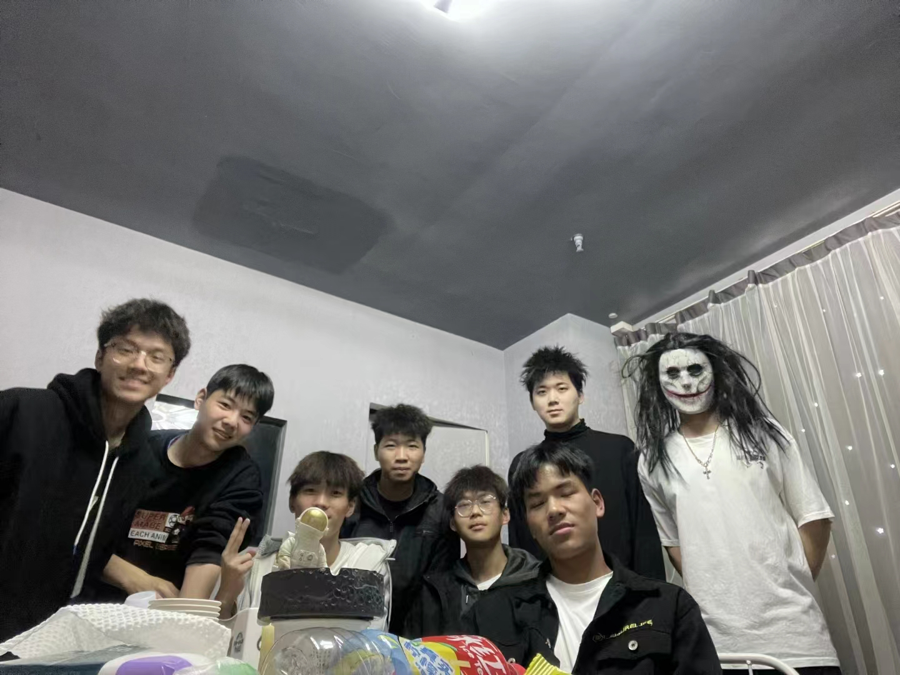

汤晖的个人空间
崇祯五年十二月，余住西湖。大雪三日，湖中人鸟声俱绝。是日更定矣，余拏一小舟，拥毳衣炉火，独往湖心亭看雪。雾凇沆砀，天与云与山与水，上下一白。湖上影子，惟长堤一痕、湖心亭一点，与余舟一芥、舟中人两三粒而已。
到亭上，有两人铺毡对坐，一童子烧酒炉正沸。见余，大喜曰：“湖中焉得更有此人！”拉余同饮。余强饮三大白而别。问其姓氏，是金陵人，客此。及下船，舟子喃喃曰：“莫说相公痴，更有痴似相公者！”
班级职务：班长
爱好：打篮球、听音乐、打游戏
然后我也不知道说什么，加个字幕滚动效果填补下面的空白吧
最后放一张图片吧，目前我大学最好的一些朋友！
